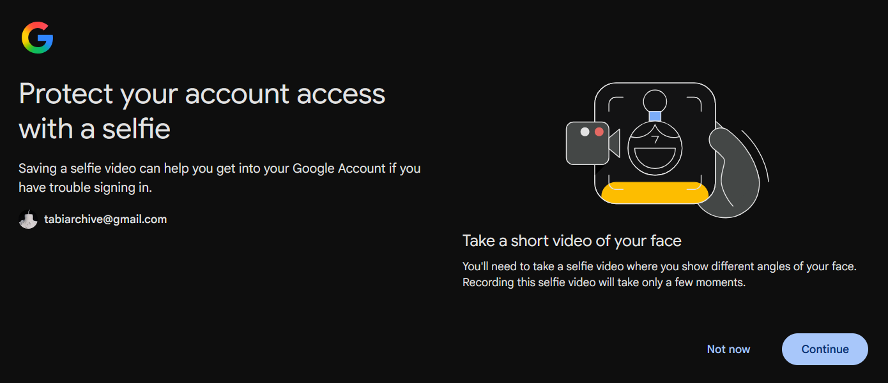
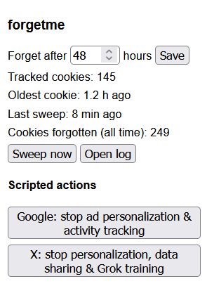

Final Project: forgetme
This week’s blog post is all about my process in developing my final project, forgetme. After discussing my topic with friends and peers, brainstorming around how to disrupt the algorithms and experiences that shape our time online, and going through the development process myself, I have learnt and changed a fair amount. For starters, I realized how deep the rabbit hole on data profiling and curation went. Learning about the layers of cookies, engagement metrics, predictive algorithms, data brokerage, and trend prediction made me realize how grand this system is and helped me refine which areas of it I can truly engage with and disrupt within the scope of this project.
When designing the extension I had to make choices regarding what parts of the browser experience should and shouldn’t be wiped. I knew I wanted to delete cookies and browsing history, as these are central to my concept, but when discussing the impact on saved login sessions and passwords in class, it made me consider if it should touch passwords as well. I landed on the answer being yes, as the larger goal of this project is to introduce friction and reduce the power the browser has in framing your online experience. I found that through developing this aspect of the extension, I pushed myself to finally start using an external password manager (NordPass.) This is something I’ve been meaning to do for a while, and I hope that this intervention will help motivate others to take similar steps towards online safety in the face of some artificial friction.
Pixel art of a forgetmenot, the icon of my browser extension forgetme.
On the more technical side, I chose to initially make this extension for Firefox, as it is the browser I use and it has a stronger emphasis placed on privacy, customization, and being open-source. An issue I ran into initially was that Firefox doesn’t timestamp its cookies, so I created my own local storage to hold a record of when cookies initially entered the devices storage and based my sweeps around that record. I also added a safeguard to prevent active tabs from having their cookies wiped until they are closed, as I want to avoid logging someone out of a service while they are actively using it.

Freaked me out a bit. It reassured me that I was doing something that made me feel more secure online.

Finally, I decided to add a log that the user could access to touch on my desire to provide some insight into these tracking metrics. By providing a growing count, an at a glance overview of stats, and the ability to dive into the sources of these cookies, I hope this aspect of the project shines a light on how vast and grand this tracking system has become. I hope to continue to add more scripted actions and extend support for this project beyond firefox in the future, along with finding a place for this project to live and find new users. My project is currently pending review from firefox, but until then it can be accessed on Github. It’s been a treat discussing code, politics, ethics, and the future with this class over the past seven weeks!